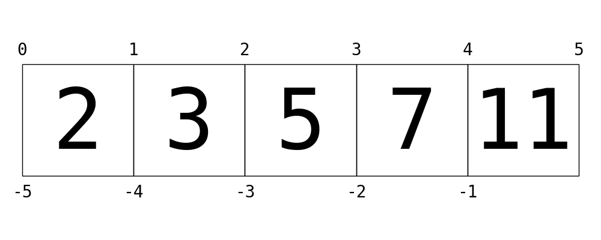

Built-In Data Structures
Contents

This notebook contains an excerpt from the Whirlwind Tour of Python by Jake VanderPlas; the content is available on GitHub.
The text and code are released under the CC0 license; see also the companion project, the Python Data Science Handbook.
< Built-In Types: Simple Values | Contents | Control Flow >
Built-In Data Structures#
We have seen Python’s simple types: int, float, complex, bool, str, and so on.
Python also has several built-in compound types, which act as containers for other types.
These compound types are:
Type Name |
Example |
Description |
|---|---|---|
|
|
Ordered collection |
|
|
Immutable ordered collection |
|
|
Unordered (key,value) mapping |
|
|
Unordered collection of unique values |
As you can see, round, square, and curly brackets have distinct meanings when it comes to the type of collection produced. We’ll take a quick tour of these data structures here.
Lists#
Lists are the basic ordered and mutable data collection type in Python. They can be defined with comma-separated values between square brackets; for example, here is a list of the first several prime numbers:
L = [2, 3, 5, 7]
Lists have a number of useful properties and methods available to them. Here we’ll take a quick look at some of the more common and useful ones:
# Length of a list
len(L)
4
# Append a value to the end
L.append(11)
L
[2, 3, 5, 7, 11]
# Addition concatenates lists
L + [13, 17, 19]
[2, 3, 5, 7, 11, 13, 17, 19]
# sort() method sorts in-place
L = [2, 5, 1, 6, 3, 4]
L.sort()
L
[1, 2, 3, 4, 5, 6]
In addition, there are many more built-in list methods; they are well-covered in Python’s online documentation.
While we’ve been demonstrating lists containing values of a single type, one of the powerful features of Python’s compound objects is that they can contain objects of any type, or even a mix of types. For example:
L = [1, 'two', 3.14, [0, 3, 5]]
This flexibility is a consequence of Python’s dynamic type system. Creating such a mixed sequence in a statically-typed language like C can be much more of a headache! We see that lists can even contain other lists as elements. Such type flexibility is an essential piece of what makes Python code relatively quick and easy to write.
So far we’ve been considering manipulations of lists as a whole; another essential piece is the accessing of individual elements. This is done in Python via indexing and slicing, which we’ll explore next.
List indexing and slicing#
Python provides access to elements in compound types through indexing for single elements, and slicing for multiple elements. As we’ll see, both are indicated by a square-bracket syntax. Suppose we return to our list of the first several primes:
L = [2, 3, 5, 7, 11]
Python uses zero-based indexing, so we can access the first and second element in using the following syntax:
L[0]
2
L[1]
3
Elements at the end of the list can be accessed with negative numbers, starting from -1:
L[-1]
11
L[-2]
7
You can visualize this indexing scheme this way:

Here values in the list are represented by large numbers in the squares; list indices are represented by small numbers above and below.
In this case, L[2] returns 5, because that is the next value at index 2.
Where indexing is a means of fetching a single value from the list, slicing is a means of accessing multiple values in sub-lists. It uses a colon to indicate the start point (inclusive) and end point (non-inclusive) of the sub-array. For example, to get the first three elements of the list, we can write:
L[0:3]
[2, 3, 5]
Notice where 0 and 3 lie in the preceding diagram, and how the slice takes just the values between the indices.
If we leave out the first index, 0 is assumed, so we can equivalently write:
L[:3]
[2, 3, 5]
Similarly, if we leave out the last index, it defaults to the length of the list. Thus, the last three elements can be accessed as follows:
L[-3:]
[5, 7, 11]
Finally, it is possible to specify a third integer that represents the step size; for example, to select every second element of the list, we can write:
L[::2] # equivalent to L[0:len(L):2]
[2, 5, 11]
A particularly useful version of this is to specify a negative step, which will reverse the array:
L[::-1]
[11, 7, 5, 3, 2]
Both indexing and slicing can be used to set elements as well as access them. The syntax is as you would expect:
L[0] = 100
print(L)
[100, 3, 5, 7, 11]
L[1:3] = [55, 56]
print(L)
[100, 55, 56, 7, 11]
A very similar slicing syntax is also used in many data science-oriented packages, including NumPy and Pandas (mentioned in the introduction).
Now that we have seen Python lists and how to access elements in ordered compound types, let’s take a look at the other three standard compound data types mentioned earlier.
Tuples#
Tuples are in many ways similar to lists, but they are defined with parentheses rather than square brackets:
t = (1, 2, 3)
They can also be defined without any brackets at all:
t = 1, 2, 3
print(t)
(1, 2, 3)
Like the lists discussed before, tuples have a length, and individual elements can be extracted using square-bracket indexing:
len(t)
3
t[0]
1
The main distinguishing feature of tuples is that they are immutable: this means that once they are created, their size and contents cannot be changed:
t[1] = 4
------------------------------------------------------------------------
TypeError Traceback (most recent call last)
~\AppData\Local\Temp\ipykernel_21628\3463816864.py in <module>
----> 1 t[1] = 4
TypeError: 'tuple' object does not support item assignment
t.append(4)
---------------------------------------------------------------------------
AttributeError Traceback (most recent call last)
<ipython-input-24-e8bd1632f9dd> in <module>()
----> 1 t.append(4)
AttributeError: 'tuple' object has no attribute 'append'
Tuples are often used in a Python program; a particularly common case is in functions that have multiple return values.
For example, the as_integer_ratio() method of floating-point objects returns a numerator and a denominator; this dual return value comes in the form of a tuple:
x = 0.125
x.as_integer_ratio()
(1, 8)
These multiple return values can be individually assigned as follows:
numerator, denominator = x.as_integer_ratio()
print(numerator / denominator)
0.125
The indexing and slicing logic covered earlier for lists works for tuples as well, along with a host of other methods. Refer to the online Python documentation for a more complete list of these.
Dictionaries#
Dictionaries are extremely flexible mappings of keys to values, and form the basis of much of Python’s internal implementation.
They can be created via a comma-separated list of key:value pairs within curly braces:
numbers = {'one':1, 'two':2, 'three':3}
Items are accessed and set via the indexing syntax used for lists and tuples, except here the index is not a zero-based order but valid key in the dictionary:
# Access a value via the key
numbers['two']
2
New items can be added to the dictionary using indexing as well:
# Set a new key:value pair
numbers['ninety'] = 90
print(numbers)
{'three': 3, 'ninety': 90, 'two': 2, 'one': 1}
Keep in mind that dictionaries do not maintain any sense of order for the input parameters; this is by design. This lack of ordering allows dictionaries to be implemented very efficiently, so that random element access is very fast, regardless of the size of the dictionary (if you’re curious how this works, read about the concept of a hash table). The python documentation has a complete list of the methods available for dictionaries.
Sets#
The fourth basic collection is the set, which contains unordered collections of unique items. They are defined much like lists and tuples, except they use the curly brackets of dictionaries:
primes = {2, 3, 5, 7}
odds = {1, 3, 5, 7, 9}
If you’re familiar with the mathematics of sets, you’ll be familiar with operations like the union, intersection, difference, symmetric difference, and others. Python’s sets have all of these operations built-in, via methods or operators. For each, we’ll show the two equivalent methods:
# union: items appearing in either
primes | odds # with an operator
primes.union(odds) # equivalently with a method
{1, 2, 3, 5, 7, 9}
# intersection: items appearing in both
primes & odds # with an operator
primes.intersection(odds) # equivalently with a method
{3, 5, 7}
# difference: items in primes but not in odds
primes - odds # with an operator
primes.difference(odds) # equivalently with a method
{2}
# symmetric difference: items appearing in only one set
primes ^ odds # with an operator
primes.symmetric_difference(odds) # equivalently with a method
{1, 2, 9}
Many more set methods and operations are available. You’ve probably already guessed what I’ll say next: refer to Python’s online documentation for a complete reference.
More Specialized Data Structures#
Python contains several other data structures that you might find useful; these can generally be found in the built-in collections module.
The collections module is fully-documented in Python’s online documentation, and you can read more about the various objects available there.
In particular, I’ve found the following very useful on occasion:
collections.namedtuple: Like a tuple, but each value has a namecollections.defaultdict: Like a dictionary, but unspecified keys have a user-specified default valuecollections.OrderedDict: Like a dictionary, but the order of keys is maintained
Once you’ve seen the standard built-in collection types, the use of these extended functionalities is very intuitive, and I’d suggest reading about their use.